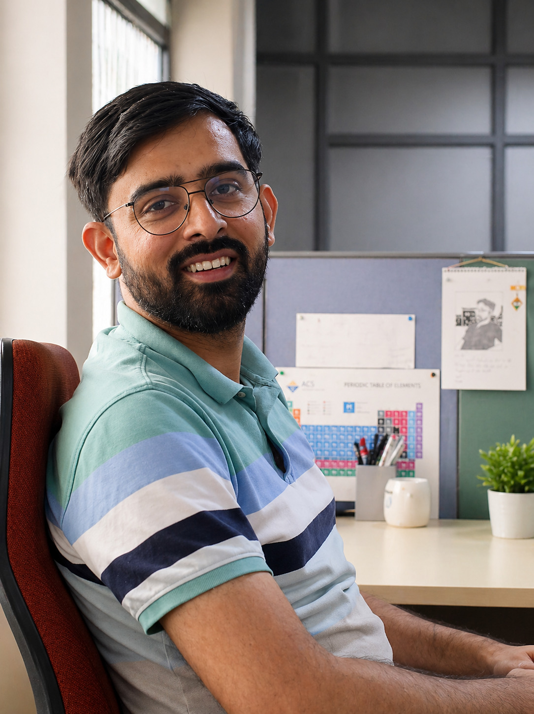

Puneet Pareek
I study how disordered and active systems relax, from supercooled liquids and glasses to dense assemblies of self-propelled particles, using simulations, mode-coupling theory and minimal statistical-mechanics models. At LIPhy, I work with Misaki Ozawa and Vivien Lecomte on the R-GAINS project.
Latest News
- Oct 2026 New Joined the Laboratoire Interdisciplinaire de Physique (LIPhy), Université Grenoble Alpes, France, as a postdoctoral researcher on the R-GAINS project, working with Misaki Ozawa and Vivien Lecomte.
- Apr 2026 Started as a postdoctoral fellow at TIFR Hyderabad. My Ph.D. thesis is available on Shodhganga.
- 2025 Our work with Peter Sollich and Ludovic Berthier on tunable fragility and reentrance in active glasses was published in PNAS.
- Apr 2025 Presented a poster at the Discussion Meeting on Glassy, Disordered and Non-equilibrium Soft Matter, RRI Bangalore.
Research
Interests
Highlights
Passive Glassy Dynamics & Timescales
Showed that caging controls the mean whereas dynamical heterogeneity governs the distribution of particle displacements, naturally explaining the Fickian yet non-Gaussian behaviour of glasses.
Kinetically Constrained Models
Explained the crossover from stretched-exponential to power-law relaxation in an energy-conserving 1D spin model: the relevant excitations change from domain walls to bound pairs of domain walls.
Active Glasses & Fragility
Characterised the critical surface separating active liquids and glasses, showing that reentrance and tunable fragility follow from its morphology and an “active glass line”.